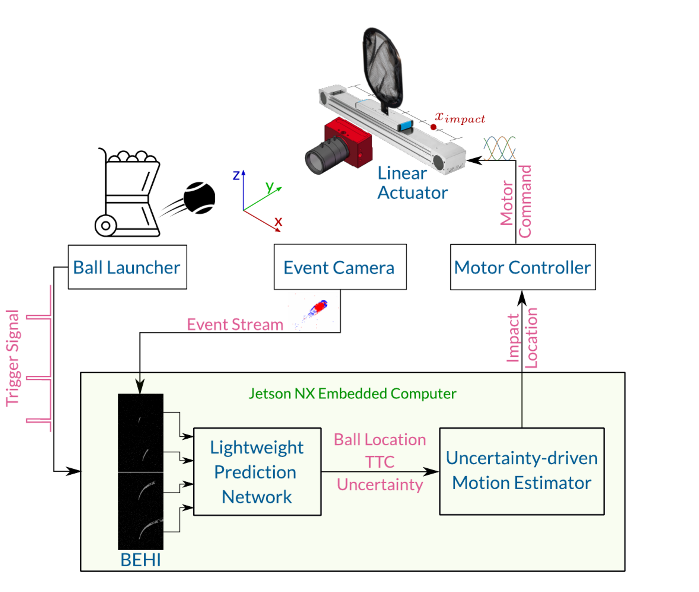
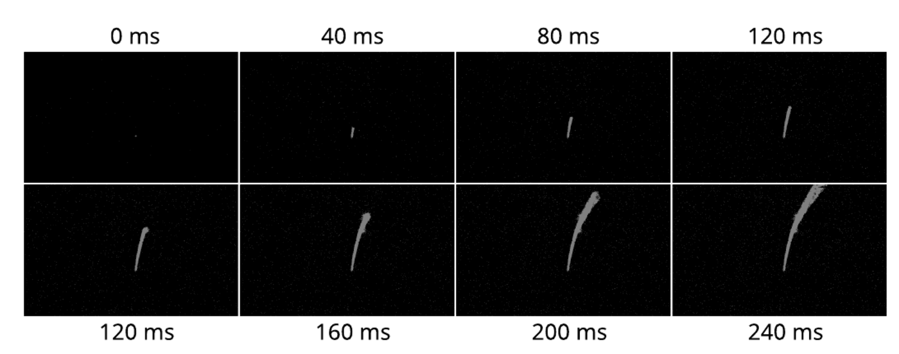
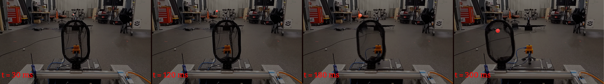

EV-Catcher: High-Speed Object Catching Using Low-latency Event-based Neural Networks
- Ziyun Wang*¹
- Fernando Cladera Ojeda*¹
- Anthony Bisulco¹𝄒²
- Daewon Lee²
- Camillo J. Taylor¹
- Kostas Daniilidis¹
- M. Ani Hsieh¹
- Daniel D. Lee²
- Volkan Isler²
TL;DR: A lightweight event representation and network that predict where a ping-pong ball will land in time to catch it — 81% success at speeds up to 13 m/s, running on an Nvidia Jetson NX.
Abstract
Event-based sensors have recently drawn increasing interest in robotic perception due to their lower latency, higher dynamic range, and lower bandwidth requirements compared to standard CMOS-based imagers. These properties make them ideal tools for real-time perception tasks in highly dynamic environments.
In this work, we demonstrate an application where event cameras excel: accurately estimating the impact location of fast-moving objects. We introduce a lightweight event representation called Binary Event History Image (BEHI) to encode event data at low latency, as well as a learning-based approach that allows real-time inference of a confidence-enabled control signal to the robot.
To validate our approach, we present an experimental catching system in which we catch fast-flying ping-pong balls. We show that the system is capable of achieving a success rate of 81% in catching balls targeted at different locations, with a velocity of up to 13 m/s even on compute-constrained embedded platforms such as the Nvidia Jetson NX.
System overview
An event camera observes the incoming ball. The events are packaged into BEHI images and sent to the lightweight prediction network, which produces trajectory estimates with uncertainty. The robust motion estimator turns the network output into an impact location, which is passed to the motor controller commanding a linear actuator to catch the ball — all on board a Jetson NX.

Binary Event History Image (BEHI)
A BEHI marks every pixel that has fired an event up to time T, so it keeps a constant-sized image that preserves the trajectory of the ball. For a sensor of resolution W×H it costs only W×H bits — far cheaper than event volumes or stacks of grayscale frames, whose size grows with the number of channels or frames.

BEHI generated from a sample trajectory. From left to right, top to bottom, the BEHI progression of a ball flying towards the camera.
Catching in action
A catching sequence for an example ball launch. Events are collected every 10 ms for a total of 120 ms, during which the rail does not move; the actuator then travels to the predicted impact location before the ball arrives.

Acknowledgements
We gratefully acknowledge the support of the GRASP
Laboratory at the University of Pennsylvania and the Samsung AI Center New York.
BibTeX
@article{wang2022evcatcher,
title={{EV-Catcher: High-Speed Object Catching Using Low-latency Event-based Neural Networks}},
author={Wang, Ziyun and Cladera Ojeda, Fernando and Bisulco, Anthony and Lee, Daewon
and Taylor, Camillo J. and Daniilidis, Kostas and Hsieh, M. Ani
and Lee, Daniel D. and Isler, Volkan},
journal={IEEE Robotics and Automation Letters},
volume={7},
number={4},
pages={8737--8744},
year={2022},
doi={10.1109/LRA.2022.3188400}
}